- Módulo: Administración de sistemas operativos
- Título del trabajo SSH
- Componentes del grupo: Jose Pablo González Galán
- Curso Académico: 2014/2015
- Fecha de entrega: 27/10/2014
Asignamos la IP del servidor en /etc/network/interfaces.
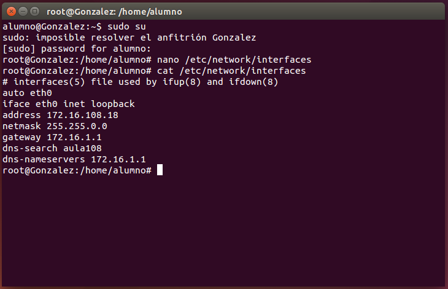Cambiamos la contraseña.
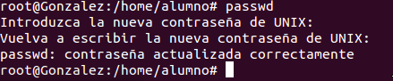Instalamos el servicio ssh.
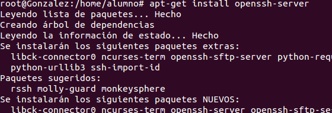Cambiamos el nombre de la máquina.
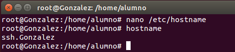Modificamos el fichero hosts añadiendo los clientes con su IP para que los reconozca en la conexión.
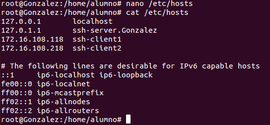Añadimos 4 usuarios.
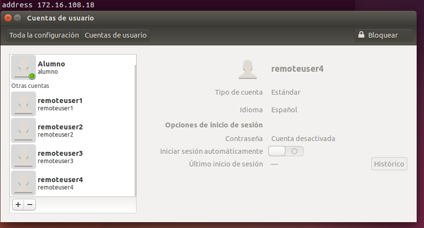Instalamos FTP en el cliente Windows.
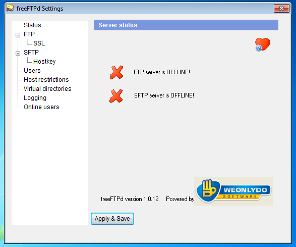Modificamos el fichero hosts de Windows añadiendole el la dirección del cliente1 y el servidor.
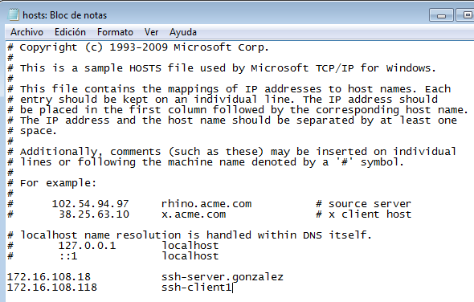Instalamos SSH en Windows.
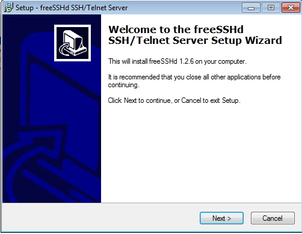 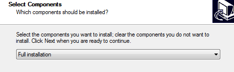 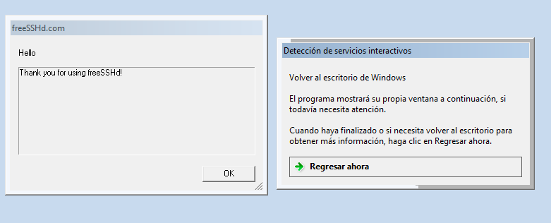Intentamos conectanos al servidor mediante putty y vemos que falla por tanto...
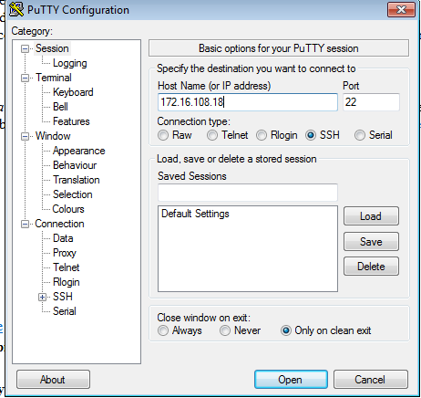Reiniciamos el servicio SSH.
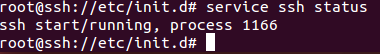Ahora si conecta.
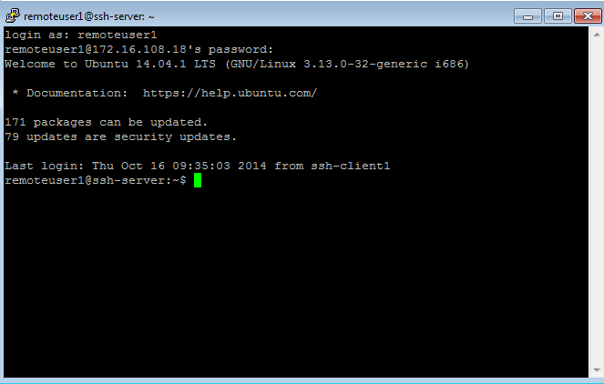Conectamos desde el cliente Linux.
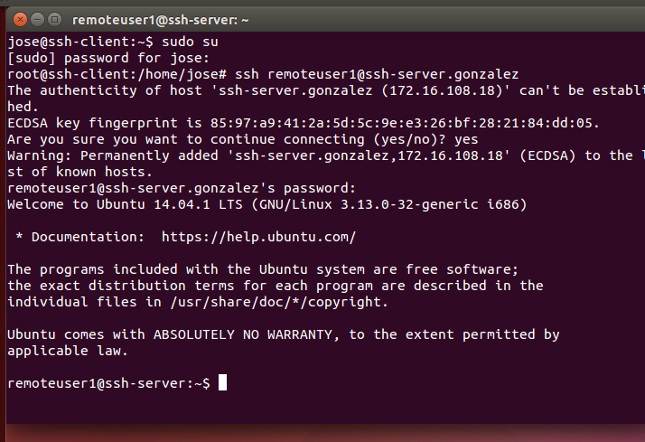Consultamos el fichero que registra las conexiones.
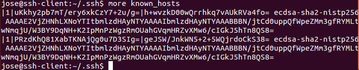Generamos una clave pública.
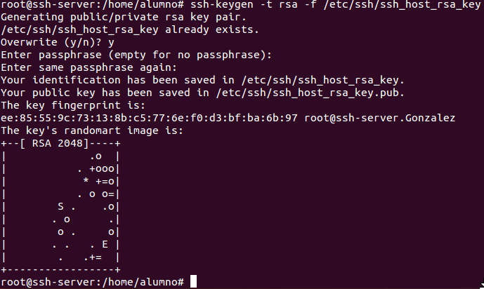Cambiamos la configuración del prompt.
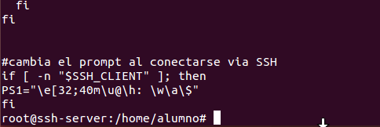Creamos otra clave publica para el usuario remoteuser4.
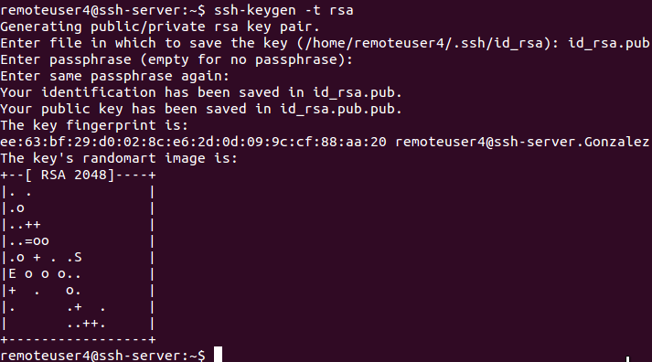 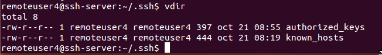Comprobamos en el fichero authorized_keys.
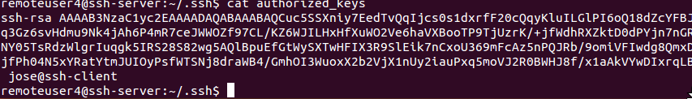 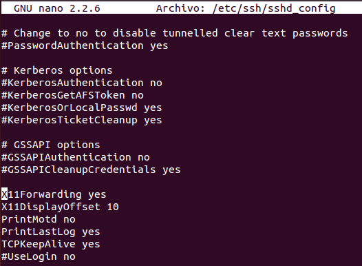Lanzamos una app remota desde el cliente que esté instalada en el servidor.
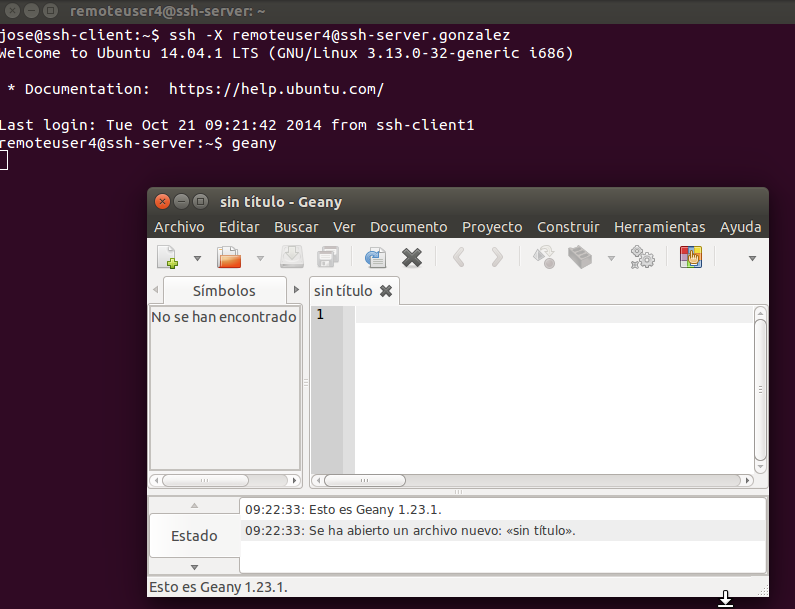Instalamos wine.
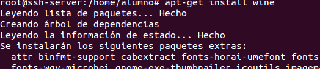Abrimos un porgrama usando wine.
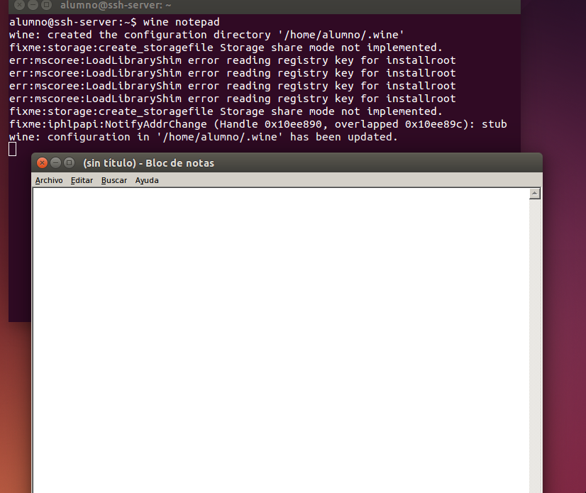Denegamos el acceso al usuario.
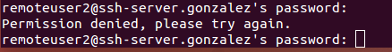Y aqui le permitimos el acceso.
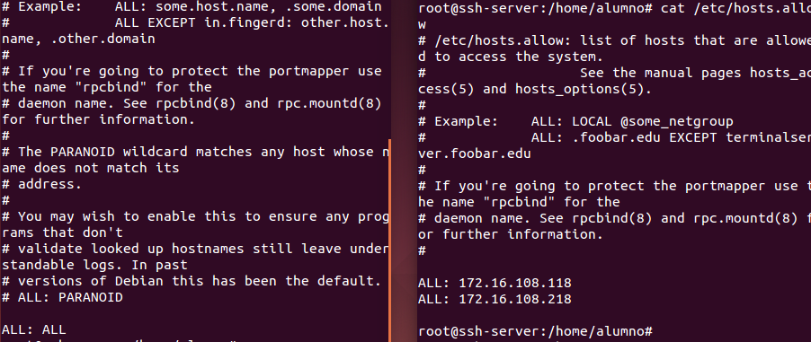Creamos un grupo y añadimos en el al usuario remoreuser4.
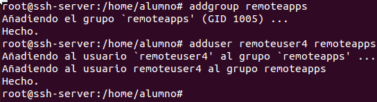Finalmente, cambiamos los permisos al grupo.
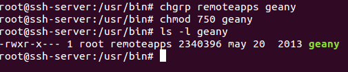